3년+
매월 운영 누적
2023년부터 매월
5,000+편 운영 + 재계약률 97% — 자체 운영팀이 직접 책임집니다.
블로그 운영의 효과는 _숫자로_ 입증됩니다. 업계 통계와 한국 검색 점유율 데이터.
블로그를 운영하는 사이트는 평균 _월 2,247회_ — 미운영 사이트(_월 1,458회_)보다 55% 더 많은 방문자를 받습니다.
국내 22개 플랫폼 중 네이버 압도적 1위. 검색 후 _첫 클릭의 54%_가 블로그·카페로 향합니다.
블로그 마케팅을 _직접_ 하시면 결국 막히는 지점이 있습니다 — 시간·전문성·체계·지속성.
블로그 1편을 _깊이있게_ 쓰려면 키워드 분석부터 발행까지 한참. 매주 2-3편이면 _일과의 큰 비중_을 차지합니다.
"무엇을 쓸까"를 _감으로_ 결정하면 노출되지 않습니다. 키워드맵·경쟁도·롱테일 매트릭스가 필요합니다.
제목·본문·이미지·메타·EXIF·해시태그 — 빠뜨리면 _저품질 위험_. 검수 시스템 없으면 누적 손실이 큽니다.
한 달 하다 멈추면 _지수 하락_. 1년+ 매주 일관 발행만이 누적 자산을 만듭니다.
키워드 검색량 + 경쟁사 블로그 지수 + 자체 SEO 로직. 발행 _전_에 노출 가능성 사전 검토.
여행사 5곳의 실제 운영 데이터입니다 (사례 활용 동의 · 익명 처리).
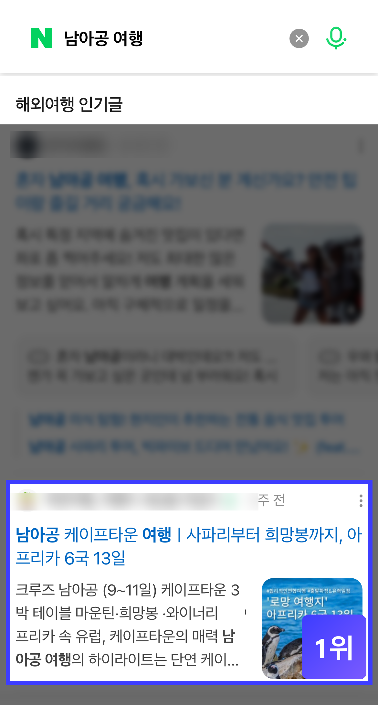
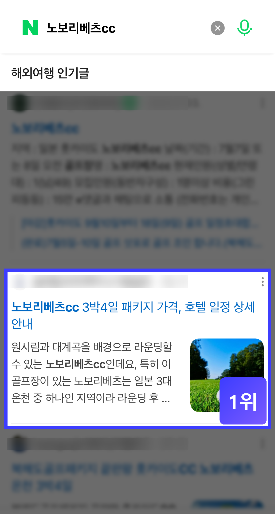
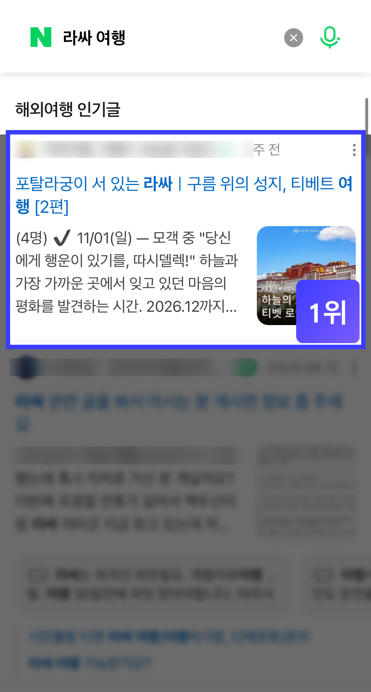
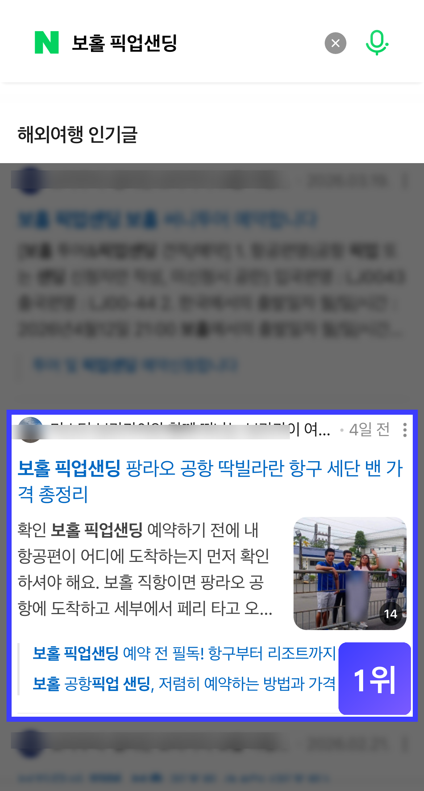
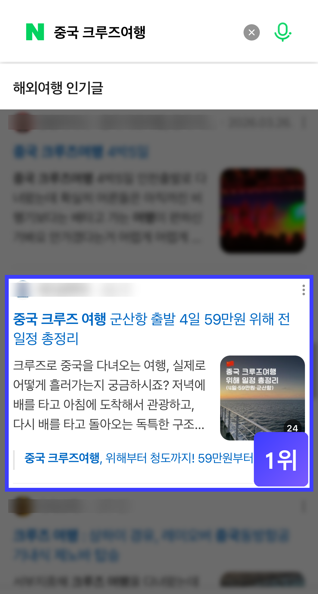
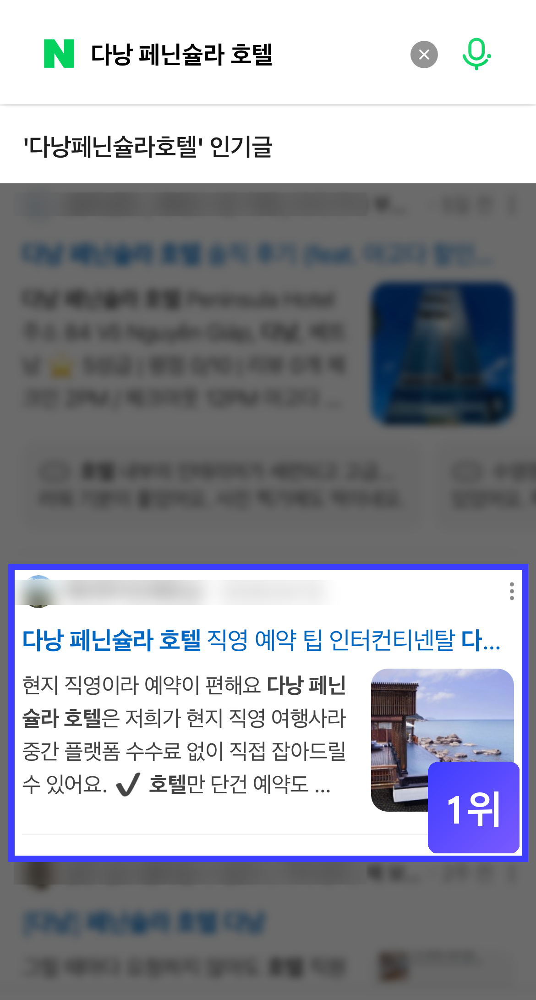
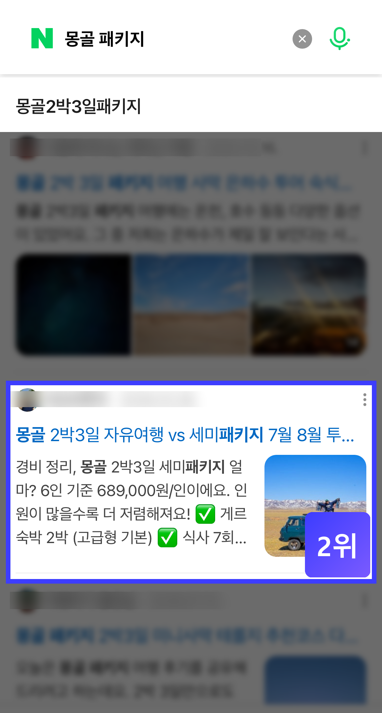
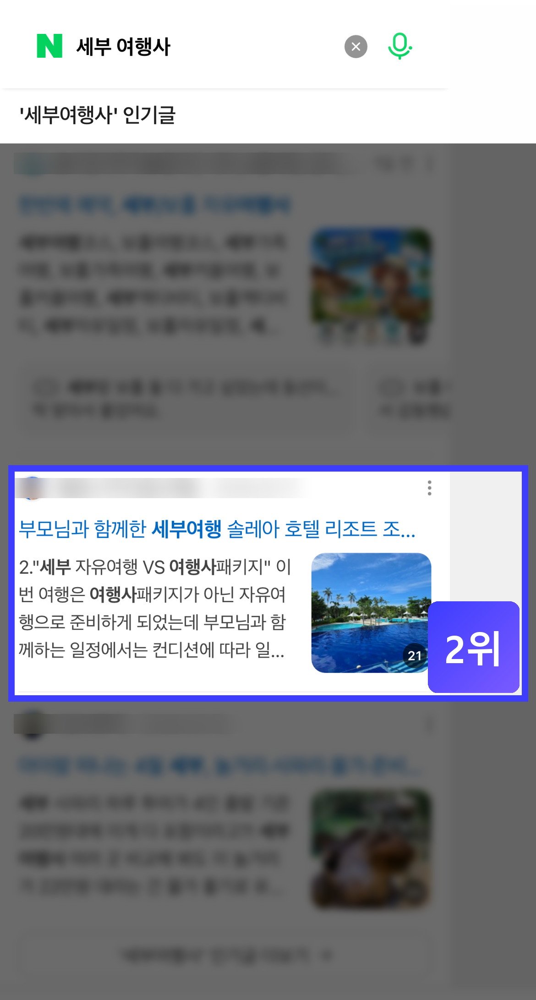
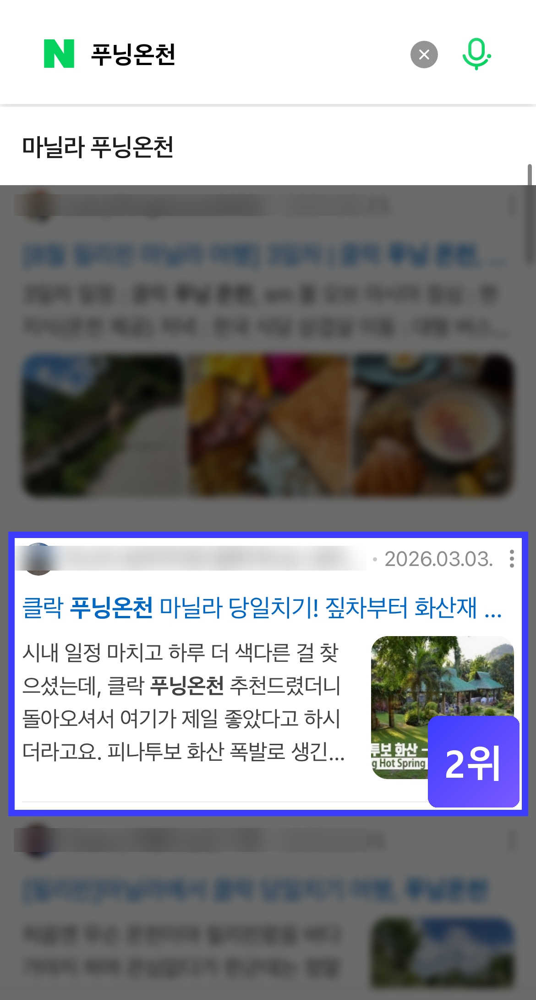
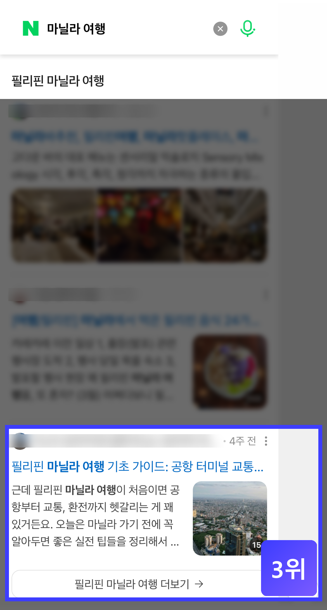
※ 순위 카운팅은 _카페 검색 결과 제외_ 기준입니다. 카페는 커뮤니티 특성상 노출 알고리즘이 달라 별도 분류. · 다른 블로그·카페 브랜드명은 익명 처리.
블로그 지수 준최5 → 최적2 도달. 6개월 만에 트래픽 7배 이상 성장.
블로그 지수 준최3 → 준최7 도달. 비수기에도 안정적 유입 확보.
상위노출 키워드 104개. 블로그발 홈페이지 유입 월 1,000명+.
상위노출 키워드 301개. 네이버 검색 상위 4.2% 진입.
※ 평균 발행 효율: 20편 발행 시 16~17편 상위노출 진입(약 80%) · 저품질 0건 유지.
고객사가 _직접_ 카톡으로 보내주신 후기입니다 (사례 활용 동의 · 익명 처리).
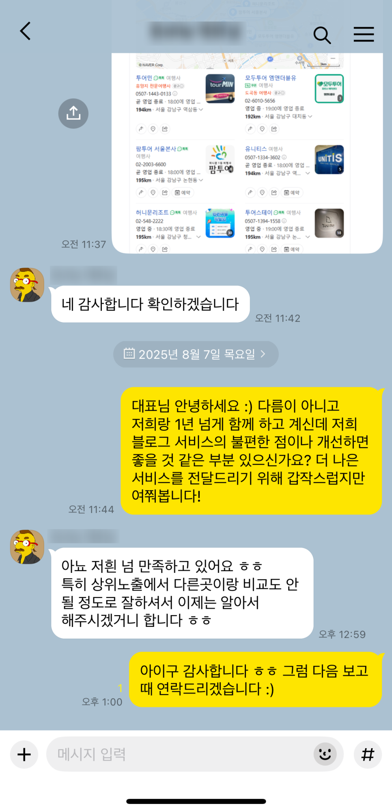
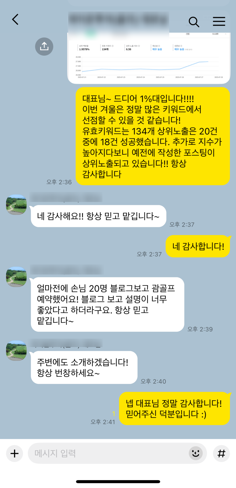
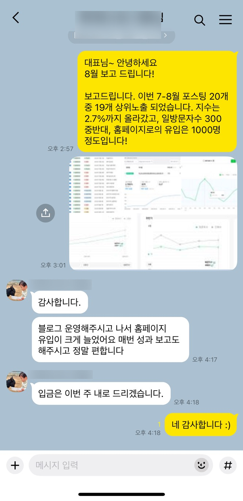
※ 의뢰사 정보는 익명 처리 · 활용 동의 받음. 클릭 시 원본 캡쳐를 자세히 볼 수 있습니다.

키워드 분석 + 경쟁 지수 비교 + EXIF 최적화 + 발행 후 트래픽 추적까지 — 한 사이클을 매월 반복합니다.
블로그 발행 외에도 키워드 진단 · 트래픽 리포트 · 톤 가이드 · 썸네일 · 블로그 스킨까지.
키워드맵 기반 직접 작성·발행. 제목·본문·이미지·메타·EXIF 완성형.
자체 운영팀 직접매월 메인·롱테일·경쟁 키워드 진단. 노출 가능 키워드 + 경쟁도 매트릭스.
자체 운영팀 직접매월 발행 콘텐츠의 통합검색·스마트블록·방문·체류시간·전환 추적.
자동 추적매월 발행 일정과 현재 진행 상태를 실시간으로 — 어떤 글이 작성 중·검수 중·발행 완료인지 한눈에 확인 가능.
실시간 업데이트전문 디자이너가 매월 발행 콘텐츠에 맞는 _CTR 높은_ 썸네일을 직접 제작.
자체 디자이너 직접계약 시 1회 — 대표님 브랜드에 맞는 _홈페이지 같은_ 블로그 스킨 디자인 제공.
계약 시 1회
계약 시 1회 무료로 대표님 브랜드에 맞는 _홈페이지형 블로그 스킨_을 디자인합니다.
아래는 실제 작업한 고객사 블로그 스킨입니다.
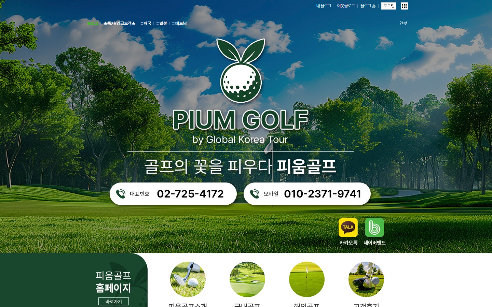
코스 풍경 헤더 + 브랜드 로고 + 카테고리 썸네일 그리드
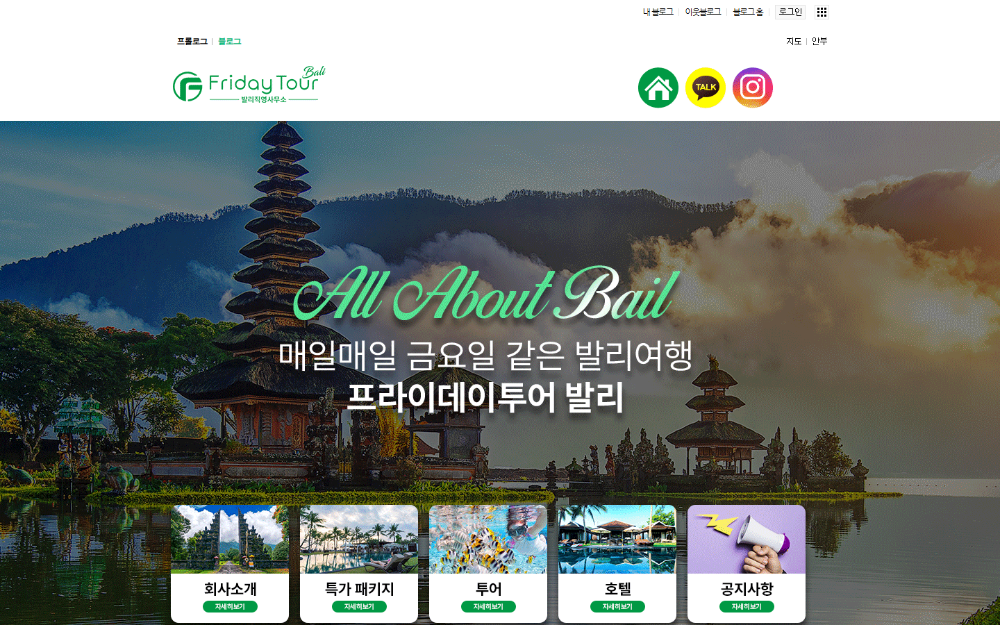
목적지 풍경 + 영문 타이포 + 5 카테고리 썸네일 그리드
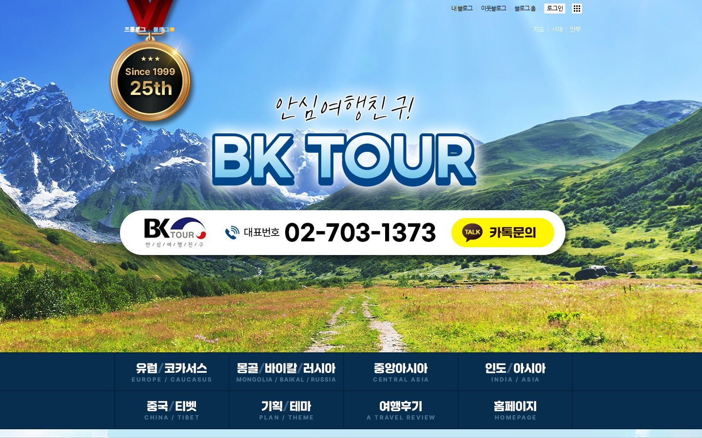
엠블럼 + 풍경 헤더 + 전화·카톡 CTA + 6 카테고리 메뉴
상위노출에 들어가는 _깊이 있는 본문_과 _체계적 구성_ — 클릭해서 본문을 직접 확인하실 수 있습니다.
※ 카드 클릭 시 _실제 발행 콘텐츠 본문_을 볼 수 있습니다 (네이버 외부 이동 X · 내부 미리보기).